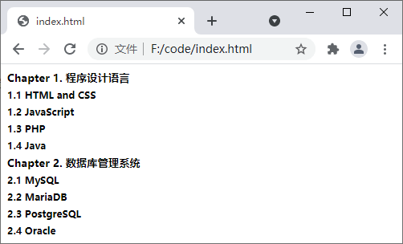
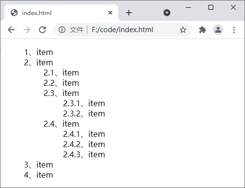

CSS计数器精讲
CSS 中的计数器类似于变量，可以实现简单的计数功能，并将结果显示在页面上，在早期的网站上应用比较广泛。要实现计数器需要用到以下几个属性：
下面我们就来看一下 CSS 中的计数器是如何使用的。
下面通过一个简单的示例来演示计数器的使用：
通过以上示例我们不难看出，使用 CSS 计数器可以在不借助其它编程语言（例如 JavaScript、PHP 等）的情况下实现简单的计数功能，当需要为某些内容添加序号时非常适用。
- counter-reset：创建或者重置计数器；
- counter-increment：递增变量；
- content：插入生成的内容；
- counter() 或 counters()：将计数器的值添加到元素。
下面我们就来看一下 CSS 中的计数器是如何使用的。
初始化计数器
要使用计数器首先需要使用 counter-reset 属性来创建一个计数器，这一过程便叫做初始化计数器。counter-reset 属性的语法格式如下：counter-reset：none | [<identifier> <integer>]
参数说明如下：- none：阻止计数器复位；
- <identifier>：定义计数器的名称；
- <integer>：定义计数器的起始值，默认值为 0，可以为负值。
计数器自增
初始化计数器后，可以通过 counter-increment 属性来指定计数器何时自增，语法格式如下：counter-increment：none | [<identifier> <integer>]
参数说明如下：- none：阻止计数器增加；
- <identifier>：定义要自增的计数器名称；
- <integer>：定义计数器每次增加的数值，默认值为 1，可以为负值。
显示计数器
最后，就是如何显示计数器了。要显示计数器您可以使用 counter() 或 counters() 函数，这两个函数的语法格式如下：
counter(name)
counters(name, string, list-style-type)
- name：计数器的名称；
- string：当计数器嵌套使用时，用来拼接的字符串；
- list-style-type：计数器显示的风格，可以是 CSS 中允许的任何《list-style-type 属性》的值。
下面通过一个简单的示例来演示计数器的使用：
<!DOCTYPE html>
<html>
<head>
<style>
body {
counter-reset: chapter;
}
h5, h6 {
margin: 5px 0 5px;
}
h5 {
counter-reset: section;
counter-increment: chapter;
}
h6 {
counter-increment: section;
}
h5:before {
content: "Chapter " counter(chapter) ". ";
}
h6:before {
content: counter(chapter) "." counter(section) " ";
}
</style>
</head>
<body>
<h5>程序设计语言</h5>
<h6>HTML and CSS</h6>
<h6>JavaScript</h6>
<h6>PHP</h6>
<h6>Java</h6>
<h5>数据库管理系统</h5>
<h6>MySQL</h6>
<h6>MariaDB</h6>
<h6>PostgreSQL</h6>
<h6>Oracle</h6>
</body>
</html>
运行结果如下图所示：

图：计数器
图：计数器
注意：在使用 CSS 计数器之前，必须使用 counter-reset 创建计数器。
计数器嵌套
另外，计数器还可以嵌套使用，而且使用 counters() 函数可以在不同级别的嵌套计数器之间插入一个字符串，如下例所示：
<!DOCTYPE html>
<html>
<head>
<style>
ol {
/* 为每个ol元素创建新的计数器实例 */
counter-reset: ol-list;
list-style-type: none;
}
li:before {
/* 只增加计数器的当前实例 */
counter-increment: ol-list;
/* 为所有计数器实例增加以“.”分隔的值 */
content: counters(ol-list, ".") "、";
}
</style>
</head>
<body>
<ol>
<li>item</li>
<li>item
<ol>
<li>item</li>
<li>item</li>
<li>item
<ol>
<li>item</li>
<li>item</li>
</ol>
</li>
<li>item
<ol>
<li>item</li>
<li>item</li>
<li>item</li>
</ol>
</li>
</ol>
</li>
<li>item</li>
<li>item</li>
</ol>
</body>
</html>
运行结果如下图所示：

图：计数器嵌套
图：计数器嵌套
通过以上示例我们不难看出，使用 CSS 计数器可以在不借助其它编程语言（例如 JavaScript、PHP 等）的情况下实现简单的计数功能，当需要为某些内容添加序号时非常适用。
关注公众号「站长严长生」，在手机上阅读所有教程，随时随地都能学习。内含一款搜索神器，免费下载全网书籍和视频。

微信扫码关注公众号